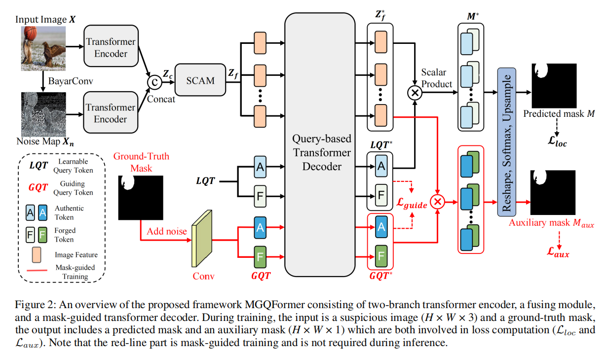

MGQFormer: Mask-Guided Query-Based Transformer for Image Manipulation Localization
论文（arxiv）
摘要
基于深度学习的模型在图像篡改定位方面取得了巨大的进展，其目标是区分被篡改和真实区域。然而，这些模型在训练效率上存在问题。这是因为它们主要通过交叉熵损失使用真值掩码，该损失优先考虑逐像素精度，但忽略了篡改区域的空间位置和形状细节。
为了解决这个问题，我们提出了一个基于掩码引导查询的Transformer框架（MGQProtrer），它使用GroundTruth掩码来指导可学习查询token（LQT, learnable query token）识别伪造区域。
具体地说，提取GroundTruth掩码的特征嵌入作为指导查询token（GQT, guiding query token），并将GQT和LQT分别输入到MGQFrorter中来估计篡改区域。然后，我们提出了一种掩模引导损失的位置和形状信息，以减少掩模在GQT和LQT之间的特征距离。我们还观察到，这种掩模引导的训练策略对MGQprort训练的收敛速度有显著影响。在多个基准测试上的大量实验表明，我们的方法显著地改进了最先进的方法。
引言
在训练过程中，我们使用多分支特征提取器从RGB输入图像中提取空间信道感知特征。它使用两个不同的转换器编码器分别从RGB输入图像及其噪声图中提取特征。然后，利用空间注意和通道注意来融合不同分布和域的RGB图像和噪声图特征。最后，将融合的特征输入到我们提出的基于查询的transformer解码器中，以输出伪造区域在图像中的位置。
图1：以前的方法和我们的方法之间的区别。我们的方法使用了一个有效的和可解释的基于查询的Transformer。Token相似度是指图像特征与查询Token之间的标量乘积的 softmax结果。此外，我们使用GroundTruth掩码来指导可学习的查询token（LQT）来识别真实的和伪造的区域。
为了迫使LQT集中于伪造区域，提取GroundTruth掩模特征作为真实的伪造引导查询token（GQT），并将它们输入解码器，以估计伪造区域的位置。由于GQT来自于地面真实掩模，这是预测掩模的目标，因此GQT将包含伪造区域的空间位置和形状细节。因此，提出了一种掩模引导损耗来减小GQT和LQT之间的特征距离。模型经过训练后，LQT也使网络关注锻造区域的位置和形状。因此，我们只在推理过程中使用LQT来定位基于查询的transformer解码器中被篡改的区域。
我们介绍了基于掩模引导的基于查询的Transformer，它包含一个基于查询的Transformer解码器，利用可学习的查询token（LQT）来定位被篡改的区域。
我们提出了一种掩模引导训练方法，将从GT掩模中提取的引导查询token（GQT）作为参考LQT。此外，我们设计了掩模引导的损失，以迫使GQT引导LQT集中于被篡改区域的空间位置和形状细节。
我们在多个基准测试上进行了广泛的实验，并证明了我们的方法在多个数据集上达到了最先进的性能。
方法
我们的方法旨在使用基于掩码引导的基于查询的Transformer（MGQprorter）来识别可疑图像中被篡改的区域。

图2：提出的框架MGQprorter的概述，由双分支transformer编码器、融合模块和掩模引导transformer解码器组成。在训练过程中，输入是一个可疑图像（H×W×3）和一个地面真实掩模，输出包括一个预测掩模和一个辅助掩模（H×W×1），这两者都涉及损失计算（Lloc和Laux）。请注意，红线部分是由掩模引导的训练，在推理过程中不需要进行训练。
我们将输入图像表示为 $~ X \in R^{H×W×3} $ ，其中H和W分别为图像的高度和宽度。我们利用BayarConv和Transformer编码器从输入图像中提取RGB和噪声特征。然后，通过空间和通道注意模块（SCAM,spatial and channel attention module）对多模态特征进行融合。
我们设计了两个可学习的查询token（LQT）来表示真实和伪造的特征，它们用于在我们提出的基于查询的Transformer解码器中搜索篡改区域。为了使查询token有效参考和基于查询的解码器快速收敛，我们提出了一种利用GroundTruth掩模的空间位置和形状细节的掩模引导训练策略。
具体来说，我们将噪声的GT掩模输入MGQFormer，以获得引导查询token（GQT）和辅助掩模 $ M_{aux} $ 。然后，利用辅助损失 $ L_{aux} $ ，使GQT包含伪造区域的空间和形状信息。此外，我们提出了一种掩模引导的损失 $ L_{guide} $ 来减小LQT和GQT之间的距离。
多分支特征提取器
图像处理定位通常包含复杂的后处理，使得检测微小的差异和伪造痕迹对RGB域具有挑战性。因此，我们采用了一个双分支transformer编码器来完全利用来自两个域的信息。
BayarConv 提取噪声特征 $~ X_n \in R^{H×W×3} $
。然后将输入的图像和噪声图发送到Transformer编码器。具体地说，我们将X和 $
X_n $ 划分为大小为P的补丁，并将补丁重塑为嵌入 $~ X_p \in R^{N×D} $
，其中 $ N=HW/P^2 $ 为补丁的数量，D是嵌入的维数。将可学习的位置嵌入 $~
pos \in R^{N×D} $ 添加到图像嵌入中，生成序列token $ Z = X_p + pos $
，然后通过Transformer层
L进行处理。对噪声分支也进行了上述相同的结算。在Transformer编码器之后，两个分支的输出被连接起来，我们得到
$~ Z_c \in R^{N×2D} $
，用于后续的融合。
来自不同分支transformer编码器的token具有不同的域和不同的分布。因此，我们使用空间和通道注意模块（SCAM）来完成融合任务。
我们首先重塑标记
$ Z_c $ ，并使用一个卷积层得到 $~ Z_m \in R^{h×w×c} $ ，其中 $ h = H/P,w
= W/P,c = D $ 。
接下来，我们将 $ Z_m $ 和 $ Z_m $
的转置分别定义为： \[V=proj(Z_m) \in
R^{hw×c}, K=proj(Z_m) \in R^{hw×c}, Q=transpose(proj(Z_m)) \in
R^{c×hw}\] 其中 $ proj $
是一个独特的投影层，包括1×1卷积和重塑操作。然后，通道注意模块如下：
\[CAM(Z_m)=proj(V(softmax(QK)))\]
同时，我们继续计算空间注意力，除了转置的Q和K，几乎与通道注意相同。随后，我们可以得到的token如下：
\[SAM(Z_m)=proj(softmax(Q^TK^T)V)\\Z_f=CAM(Z_m)+SAM(Z_m)+Z_m\]
然后将图像特征令牌 $~ Z_f \in R^{N×D} $
发送到基于查询的Transformer解码器。
掩模Transformer解码器
我们首先介绍在引用阶段的解码器。
对于所提出的基于查询的transformer解码器，我们使用了真实的和伪造的可学习查询令牌
$~ LQT \in R^{2×D} $
。这些查询被随机初始化，并表示伪造的和真实的特性。具体地说，图像特征token
$ Z_f $
和LQT由由n个基于Transformer层组成的解码器同时处理。在注意机制过程中，LQT与特征token
$ Z_f $ 相互作用，提取丰富的伪造信息。然后，我们得到了图像特征 $ Z_f^∗ $
和 $ LQT^∗ $ 。掩码的计算方法如下： \[M^∗=norm(proj(Z_f^∗))∗(norm(proj(LQT^∗))^T\]
其中proj是一个线性层，norm表示 $ L_2 $
归一化，我们通过在参考图像特征和可学习查询标记之间执行标量乘积得到 $~
M^∗ \in R^{N×2} $ 。
为了得到最终的掩模，我们将序列重塑为掩模
$~ M^{∗∗} \in R^{h×w×2} $ ，并以类的维度应用一个softmax层： \[M=upsample(norm(softmax(M^{∗∗})))\] 其中，
$~ M \in R^{H×W} $
为预测的掩模，upsample为双线性上采样操作，将掩模的大小调整为与输入图像相同的大小。
综上所述，我们基于查询的方法利用真实和伪造的LQT来选择与自身高度相似的区域，这使得预测伪造区域的过程更容易解释和有效。
掩码引导的训练过程
基于查询的模型在相应的任务中取得了很大的成功。然而，这些模型已经被证明存在查询回复的效率较低的问题。先前的方法已经提出了诸如去噪（Li等人2022a）和掩蔽注意（Cheng等人2022a）等方法。
我们指出，以往的方法缺乏对伪造区域的位置和形状细节的LQT的直接监督，导致训练无效。这些方法主要利用交叉熵损失的地面真实掩模，优先考虑每像素的精度。
为了解决这个问题，我们提出了一种掩模引导的训练策略，该策略使用引导查询令牌（GQT）来迫使LQT关注伪造区域的位置和形状。GQT通过提取噪声地面真掩模的特征得到，并利用辅助损失使GQT包含伪造区域的空间和形状信息。从而提高了MGQ前体训练的收敛速度。
特别地，我们首先会向GroundTruth掩模添加噪声。这一步是因为从原始GroundTruth掩码预测辅助掩码对于transformer解码器和延迟训练来说可能太简单了。我们将点噪声应用于掩模中，类似于DN-DETR（Li
et al.
2022a）用于盒子去噪训练，以获得更鲁棒的模型。我们随机选择掩模内的点，并倒置原始值来表示不同的区域。此外，我们使用一个调优的参数µ来表示面积的噪声百分比，因此噪声点的数量为µ·HW。
在噪声掩模的情况下，我们通过卷积网络将掩模转换为GQT，以保持掩模中的空间信息，并将GroundTruth
$~ G \in R^{H×W} $ 转换为 $~ GQT \in R^{2×N} $ 。然后，GQT连同图像特征 $
Z_f $
和LQT一起被发送到Transformer解码器。在解码器中，GroundTruth信息GQT作为与其他查询交互的引导，并帮助解码器重构LQT。
在Transformer解码器之后，我们得到了由GroundTruth
token GQT引导的图像特征 $ Z_f^∗ $ 和查询令牌 $ LQT^∗ $ 和 $ GQT^∗ $
。通过使用与掩模Transformer解码器部分相同的过程，对 $ Z_f^∗ $ 和 $ GQT^∗
$ 进行标量乘积，进一步计算了辅助掩模 $~ M_{aux} \in R^{H×W} $
。然后我们让 $ M_{aux} $ 参与到损失的计算中来。
辅助损失
由于我们使用卷积网络将GroundTruth掩码转换为查询token，并且对掩模加噪声以保持鲁棒性，为了使辅助掩码更加精确，需要对卷积网络进行监督。因此，为了使GQT包含锻造区域的空间和形状信息，我们使用像素级交叉熵损失如下：
\[L_{aux}=−\sum_{i=1}^{HW}G_i\cdot log(M_{auc},i)\]
其中 $~ G \in R^{H×W} $ 是GroundTruth掩模。注意，为了得到模型预测的精确掩模，我们使用没有噪声的原始GT掩模G来计算辅助损失。
掩模引导的损失
GQT的目的是引导LQT，并对两者进行相同的处理，生成预测的掩模M和辅助掩模\(M_{aux}\)。因此，我们期望LQT与GQT相似，从而使预测更加精确。我们采用余弦相似度损失来减少两个查询的距离，可以表述为： \[L_{guide}=1-cos(LQT^*,GQT^*)\] 其中cos为余弦相似度。
损失函数
总损失函数L包括三个部分：使\(M_{aux}\)精确的辅助损失，使$ LQT^∗ $ 和 $ GQT^∗ $ 更接近的掩模引导损失，以及预测掩模M的定位损失\(L_{loc}\)，其中\(L_{loc}\)采用了和辅助损失相同的交叉熵损失： \[L=L_{loc}+L_{aux}+ \lambda L_{guide}\]
其中，$ $是一个权重参数，在训练期间设置为0.5。
实验
实验设置
测试数据集。我们首先使用PSCC-Net合成的数据集对我们的模型进行预训练（Liu等人，2022年）。然后，我们在CASIA数据集（Dong、Wang和Tan 2013）、Columbia数据集（Hsu和Chang 2006）、NIST16数据集（Guan et al. 2019）和IMD20数据集（诺沃扎姆斯基、马赫迪安和Saic 2020）上评估我们的模型。特别地，CASIA提供拼接和复制移动图像，这广泛出现在图像伪造场中。Columbia数据集由180张拼接图像组成，它们未压缩，没有经过后处理。NIST16是一个具有挑战性的数据集，它有564张眼睛很难识别的高分辨率图像。IMD20收集了由不同的相机模型捕获的35,000张真实图像，并由不同的内部绘制方法生成的不同类型的操作组成。
评估指标。为了评估所提出的MGQFrotar的定位性能，在PSCCNet（Liu et al. 2022）之后，我们报告了图像级F1评分和曲线下面积（AUC）作为评价度量。我们采用fxed阈值对预测的掩模进行二值化，这是计算f1分数所必需的。
实施细节。MGQFormer在一个NVIDIA GTX 1080 Ti GPU上实现的。所有输入图像的大小都被调整为384×384。我们使用Adam作为优化器，学习率从2.5e-7衰减到1.5e-8，批处理大小为2。特征提取器使用ImageNet预训练的ViT模型权值（Steiner et al. 2021）初始化，共12层，补丁大小为16，而解码器使用来自6层的截断正态分布的随机权值初始化。
与最先进的方法的比较
我们在两种设置下，将我们的模型与其他最先进的方法进行了比较：
1)在合成数据集上进行训练和在完整的测试数据集上进行评估。
2)对测试数据集的训练分割和评估其训练分割的预训练模型进行微调。
对于预先训练的模型，我们评估的方法有：ManTraNet (Wu, AbdAlmageed, and Natarajan 2019), SPAN (Hu et al. 2020), ObjectFormer (Wang et al. 2022), 和ERMPC (Li et al. 2023)，同时进一步比较的方法有： RGB-N (Zhou et al. 2018) 和PSCCNet (Liu et al. 2022)。
预先训练的模型。表1报告了使用预先训练过的模型获得的最佳定位AUC（%）分数。我们可以观察到，MGQFormer在Columbia、CASIA、IMD20和所有数据集的平均AUC（%）上取得了最高的性能，并在NIST16上获得了具有竞争力的效果。特别是，MGQFormer在现实世界的IMD20数据集上达到88.3 %，比ERMPC高2.7%。这验证了我们的方法具有捕获篡改痕迹和泛化到高质量数据集的突出能力。在NIST16数据集上，我们未能达到最佳的性能。我们认为，Transformer网络的性能受到了训练决策的影响。如果测试时的分辨率接近训练，就可以完全实现高性能。然而，NIST16是一个高分辨率的数据集，它大大超过了我们的训练数据集。
微调模型。为了补偿合成数据集与标准数据集之间的视觉质量差异，使用预训练模型的网络权值来启动调整模型，该模型将在CASIA数据集的训练分割上进行训练。如表2所示，我们将AUC和F1结果（%）与其他方法进行了比较，我们的模型获得了最好的性能，表明MGQFormer可以通过查询有效地捕获细微的篡改伪。
鲁棒性评估
我们对Columbia数据集的原始图像应用不同的图像失真方法，并评估我们的MGQFormer的鲁棒性。失真类型包括： 1)用不同的尺度调整图像的大小，2)用核大小k的高斯模糊，3)用质量因子q的JPEG压缩。我们比较了预训练模型在原始数据集和损坏数据上的操作定位性能（AUC分数），并报告了表3中的结果。与以往的方法相比，MGQFormer对所有失真具有最好的鲁棒性。特别是当面对调整大小和JPEG压缩时，我们的方法的性能略有下降，表示补丁MGQFormer对低质量图像具有鲁棒性。
消融实验
MGQFormer的设计包含多分支特征提取器和掩模引导训练。该多分支特征提取器采用了一个额外的BayarConv分支来利用噪声信息，并利用SCAM融合这两个域。利用掩模引导的训练来添加基础GroundTruth信息，引导LQT专注于目标区域，提高查询回复的效率。
噪声分支的消融研究。定量结果见表4。基线表示我们只使用单个编码器和基于查询的转换器解码器。为了评估噪声分支的有效性，我们使用了一个RGB分支并去除SCAM。我们可以观察到，如果没有噪声分支，哥伦比亚大学的AUC评分下降了1.1%，CASIA大学的AUC评分下降了2.3%。性能提升验证了多分支特征提取器的使用有效地提高了模型的性能。
掩模引导训练的消融研究。为了证明掩模引导训练的影响，我们在带有图像特征的transformer解码器中只留下LQT，并在训练过程中取出GroundTruth掩模的输入。如表4所示，在没有面具引导训练的情况下，哥伦比亚大学组的AUC评分下降了2.8%，CASIA组下降了3.6%。
除了促进定位外，掩模引导训练进一步提高了收敛速度。为了评估这种效果，我们比较了不同时期训练策略的存在和不存在的结果。如图3所示，我们在训练期间显示了合成数据集的验证分割上的AUC（%）分数。事实证明，MGQFrorer在开始时显著促进了训练，在frst时期比没有面具引导训练的模型多了12.7%，并显著加快了收敛速度。这表明，GQT当然有助于transformer解码器提高重构LQT的效率。
GT引导掩膜对应用噪声与否的消融研究。在图4中，我们展示了参数µ的不同值，表示噪声点的百分比，以验证其对哥伦比亚和IMD20的影响。随着地面真实掩模的增加，有更多的噪声点，得到更鲁棒和广义的模型；然而，较大的值可能会对空间信息造成损害，误导网络。相比之下，较小的µ值提供了一个更准确的地面真实掩模，但模型可能太容易预测辅助掩模和延迟训练。从比较中可以看出，设置为0.01是最优解。点噪声的使用达到了0.9%/1.2%的AUC增益，如表4所示。
可视化结果
定性的结果。如图5所示，我们提供了各种方法的预测伪造掩模。可以观察到PSCC-Net和ManTraNet要么输出错误的区域，要么做出不明确的预测。对可视化结果的比较表明，该方法不仅可以更准确地定位篡改区域，而且还可以输出清晰的区域。它受益于多模态信息和基于查询的transformer解码器，它使用全局注意来生成掩码。
掩膜引导训练的可视化。为了验证掩模引导训练的有效性，我们展示了MGQFormer预测的掩模，未掩模引导训练生成的掩模，以及图6中的辅助掩模。很明显，MGQFrorer利用地面真实掩模关注伪造区域，从预测掩模与辅助掩模之间的相似性可以看出。具体来说，没有掩模引导训练的网络会对相对较小的物体做出错误的判断。
在图7中，我们进一步展示了表示MGQFormertransformer解码器伪造的LQT注意图与未经掩模引导训练的注意图之间的差异。很明显，在掩膜引导训练中，由于GQT的引导，LQT可以准确地聚焦于目标区域。相比之下，没有掩模引导训练的LQT不能很好地检测伪造，甚至被分配到代表真实位置的完全相反的区域。这一比较表明，所提出的包含来自GT掩模的空间和形状信息的GQT可以迫使LQT集中于我们分配给LQT的正确区域类型。
结论
在本文中，我们提出了一种新的基于掩模引导的Transformer框架（MGQFormer）。具体来说，第一步，提取RGB和噪声特征，并进一步融合它们。第二步，将噪声GroundTruth掩码转换为引导查询token（GQT），并将GQT和LQT输入MGQFormer分别估计篡改区域。我们进一步提出了辅助损失和掩模引导损失来指导LQT的重建。可视化结果表明，所提出的掩模引导训练策略对MGQ训练的收敛速度和定位性能有显著影响。在几个基准上的大量实验结果证明了我们的算法的有效性。